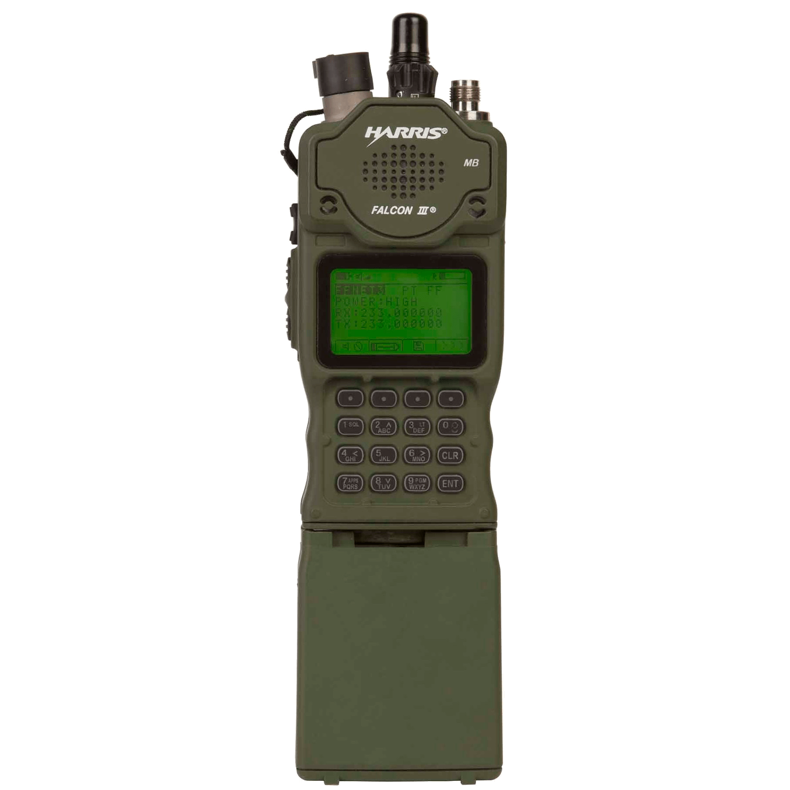
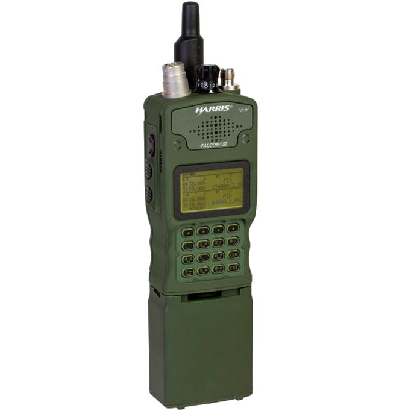

Радіостанція HARRIS RF-7850M-HH / RF-7800V-HH
Тема присвячена призначенню, тактико-технічним характеристикам, режимам роботи й базовим діям із портативною УКХ радіостанцією HARRIS у телефонному режимі та режимі передачі даних. Посібник виробника додатково уточнює безпеку, щоденну експлуатацію та обслуговування саме RF-7850M-HH.
Призначення і можливості
Портативна радіостанція RF-7850M-HH / RF-7800V-HH забезпечує радіозв'язок в УКХ діапазоні для тактичної ланки управління. Вона підтримує голос і дані, відкриту та захищену роботу, аналогові й цифрові сигнали, фіксовані частоти та режими псевдовипадкового перестроювання робочої частоти.
Вбудований GPS використовується для визначення позиції та синхронізації режимів Quicklook 3, Quicklook Wide і TNW.
До сімейства також належать возимі варіанти RF-7850M-V501 / V511 і RF-7800V-V501 / V511. У радіостанцію можна запрограмувати 25 мереж, з яких 13 доступні безпосередньо перемикачем.
MACA2 запобігає колізіям під час багатостанційного обміну даними: перед передаванням пакета станція запитує готовність адресата, отримує підтвердження, а інші станції тимчасово звільняють канал. Голос і дані можуть використовувати один канал, але надто довге утримання PTT може спричинити втрату даних.


Модуляції та сигнали
| Позначення | Назва | Тип роботи |
|---|---|---|
| AM | Amplitude Modulation Амплітудна модуляція |
Аналогові сигнали; для RF-7850M-HH від 108,025 до 512 МГц |
| FM | Frequency Modulation Частотна модуляція |
Аналогові сигнали |
| ASK | Amplitude Shift Keying Амплітудна маніпуляція |
Цифрові сигнали; для RF-7850M-HH від 108,025 до 512 МГц |
| FSK | Frequency Shift Keying Частотна маніпуляція |
Цифрові сигнали |
Вокодери
Вокодер перетворює голос на цифровий потік і назад. У навчальному матеріалі для обох моделей наведено два типи:
- MELP
- Mixed Excitation Linear Prediction - цифрова телефонія зі швидкістю 2400 біт/с.
- CVSD
- Continuously Variable Slope Delta Modulation - цифрова телефонія зі швидкістю 16000 біт/с.
Режими роботи
Порівняння доступних мереж
| Режим | Доступ / трафік | Канал | Швидкість даних | Частоти | Крок сітки | Синхронізація та особливості |
|---|---|---|---|---|---|---|
| FIXFixed Frequency | MACA; голос і дані | 25 / 75 кГц | 64 / 192 кбіт/с | RF-7850M: 30-512 МГц RF-7800V: 30-108 МГц |
1 Гц через CPA 10 Гц вручну |
Dual PTT у двох FIX-мережах, коли MACA вимкнено |
| QL1AQuicklook 1A | MACA; голос і дані | 25 кГц | 16 кбіт/с | RF-7850M: 30-511,975 МГц RF-7800V: 30-107,075 МГц |
25 кГц | ППРЧ понад 100 разів/с; сумісність зі старішими Harris |
| QL2Quicklook 2 | Тільки голос | - | - | RF-7850M: 30-511,975 МГц RF-7800V: 30-107,075 МГц |
25 кГц | ППРЧ понад 300 разів/с |
| QL3Quicklook 3 | Тільки голос | - | - | RF-7850M: 30-511,975 МГц RF-7800V: 30-107,075 МГц |
25 кГц | TOD +/- 1 хв або GPS; SLOW / MED / FAST, FCS та AUTO |
| QLWQuicklook Wide | MACA2; голос і дані | 75 кГц | 64 кбіт/с | RF-7850M: 30-511,975 МГц RF-7800V: 30-107,075 МГц |
25 кГц | TOD +/- 1 хв або GPS; ППРЧ понад 100 разів/с |
| TNWTactical Networking Waveform | TDMA; голос+дані, дані або VR-TNW | 25 / 75 кГц | 2,4 кбіт/с GPS 14 кбіт/с IP |
RF-7850M: 30-511,975 МГц RF-7800V: 30-107,075 МГц |
25 кГц | TOD +/- 1,5 хв або GPS; автоматичний Time Master; репітер Black / Red |
| ANW2CAdaptive Networking Wideband Waveform 2C | ANW2 / TDMA; голос і дані | 1,2 МГц | 3-1372 кбіт/с | 225,6-512 МГц | 5 кГц | Самоорганізована адаптивна мережа; до 30 радіостанцій у локальній мережі |
| STCSatellite TDMA Capability | Супутниковий TDMA | 25 або 5 кГц | Залежить від конфігурації | Rx 243-270 МГц Tx 291-318,3 МГц |
- | Фіксовані частоти; військовий супутник виконує роль ретранслятора |
| CWRCountry Wide Repeater | Fixed Frequency + MACA2; PTT та IP-дані | За базовою FIX-мережею | За базовою FIX-мережею | За конфігурацією мережі | За базовою FIX-мережею | Ретрансляторні вузли з IP-магістраллю; автоматична реєстрація абонентської радіостанції на доступному вузлі під час руху |
Термінологія CWR: stage - ретрансляторний вузол або точка доступу до IP-магістралі, а outstation - абонентська радіостанція. Коли абонент переходить у зону покриття іншого вузла, радіостанція автоматично реєструється на доступному новому вузлі, зберігаючи доступ до мережі.
Скорочення: MACA - Multiple Access with Collision Avoidance; PTT - Push-to-Talk; TOD - Time of Day; GPS - Global Positioning System; FCS - Free Channel Search; TDMA - Time Division Multiple Access; MANET - Mobile Ad Hoc Network; IP - Internet Protocol; Rx - Receive; Tx - Transmit.
Порівняння RF-7850M-HH і RF-7800V-HH
Головна відмінність: RF-7850M-HH працює до 512 МГц, тому підтримує високочастотні можливості ANW2C, STC, AM і ASK. RF-7800V-HH обмежена діапазоном до 108 МГц. Базові мережі, вокодери та органи керування в них спільні.
| Можливість | RF-7850M-HH | RF-7800V-HH |
|---|---|---|
| Робочий діапазон | 30-512 МГцШирший діапазон | 30-108 МГц |
| Режими та мережі | FIX, QL1A, QL2, QL3, QLW, TNW, CWRДодатково: ANW2C, STC | FIX, QL1A, QL2, QL3, QLW, TNW, CWRANW2C і STC недоступні |
| Модуляції | FM, FSKAM і ASK: 108,025-512 МГц | FM, FSKAM і ASK недоступні |
| Вокодери | MELP 2400 біт/с, CVSD 16000 біт/сОднаково | MELP 2400 біт/с, CVSD 16000 біт/сОднаково |
| Quicklook і TNW | 30-511,975 МГц | 30-107,075 МГц |
| ANW2C | 225,6-512 МГц; MANET, до 1372 кбіт/сЛише RF-7850M-HH | Недоступний |
| STC | Rx 243-270 МГц; Tx 291-318,3 МГцЛише RF-7850M-HH | Недоступний |
| Інші спільні можливості | 25 мереж, 13 положень перемикача, GPS, Citadel/AES, CWR | 25 мереж, 13 положень перемикача, GPS, Citadel/AES, CWR |
Числові характеристики
| Параметр | Значення |
|---|---|
| Робочий діапазон RF-7850M-HH | 30-512 МГц |
| Кількість програмованих мереж | 25 |
| Вибір перемикачем | 13 мереж |
| MELP | 2400 біт/с |
| CVSD | 16000 біт/с |
| Шифрування | Citadel, AES 128/256 біт |
| Живлення | Li-ion батарея 10,8 В, 4,8 / 5,8 / 6,8 А/год |
| Середній час роботи АКБ | Близько 18 год за циклу 10% TX / 10% RX / 80% очікування при +20 °C; при -20 °C скорочується приблизно на 20-25% |
| Температура без батареї | -30 °C до +60 °C |
| Температура з батареєю | -20 °C до +60 °C |
| Занурення у воду | До 5 м |
| Вологість | До 95% |
| Антенний порт | 50 Ом, роз'єм TNC |
| Стабільність частоти | +/- 1 ppm |
| Вага без батареї | 680 г |
| Вага з батареєю | 1,09 кг за Operation Manual Rev. L; у навчальній презентації вказано 910 г. На екзамені орієнтуватися на формулювання викладача. |
Примітка щодо температури: таблиця специфікацій посібника для радіостанції загалом наводить -30...+60 °C, а навчальна презентація окремо вказує для комплекту з батареєю -20...+60 °C.
Потужність передавача
| Режим | Потужність | Примітка |
|---|---|---|
| LOW | 1 Вт або 0,25 Вт | 1 Вт у мережах з MACA2; 0,25 Вт у мережах без MACA2. |
| MEDIUM | 2 Вт | Середня потужність. |
| HIGH | 5 Вт | Висока потужність. |
| HIGH+ | 10 Вт | Надвисока потужність, короткочасне використання. |
Безпека експлуатації
- Не торкатися антени під час передачі. Радіостанція може випромінювати і без натискання PTT під час передавання даних або IP-з'єднання.
- Не розбирати, не стискати, не замикати, не змінювати полярність і не нагрівати Li-ion АКБ понад 71 °C. Використовувати лише схвалені зарядні пристрої.
- Пошкоджену батарею, особливо після контакту з водою, негайно вивести з експлуатації. Не сушити АКБ нагріванням.
- Тривала передача та недостатнє охолодження можуть сильно нагріти корпус. Дати радіостанції охолонути; повідомлення про перегрів можуть автоматично знизити потужність або заборонити передачу.
- Перед використанням гарнітури встановити безпечний рівень гучності. Не працювати поблизу пального, боєприпасів або ліній електропередач без дотримання встановлених безпечних відстаней.
- Li-ion АКБ тримати окремо від свинцево-кислотних батарей та інструментів, забруднених кислотою.
Комплект і підготовка до роботи
Комплект
- прийомопередавач;
- інструкція;
- АКБ;
- програмне забезпечення;
- GPS-антена;
- коротка стрічкова антена 30 см або довга стрічкова антена 120 см;
- виносна штирьова антена;
- заглушка;
- кабелі 0,3 м і 1,2 м за варіантом комплектації.
Зарядний пристрій
- розрахований на дві батареї;
- оранжевий індикатор - батарея заряджається;
- зелений індикатор - батарея заряджена;
- червоний індикатор - проблема з АКБ.
Підготовка
- Встановити органи керування у вихідне положення, перемикач - у положення OFF.
- Перевірити високочастотні роз'єми радіостанції та антени: без механічних пошкоджень, стружки чи сміття.
- При використанні внутрішнього GPS перевірити чистоту роз'ємів і прикрутити GPS-антену.
- Під кутом встановити батарею до упору й зафіксувати її поворотом відносно трансивера.
- Підняти й повернути перемикач з OFF у потрібне положення 1-13.
- Переконатися, що немає індикації несправності, а індикатор АКБ показує достатній заряд.
Перед виходом у зв'язок
- Радіостанція має бути заздалегідь запрограмована через CPA, передню панель або Web UI.
- Перевірити тип мережі, назву мережі, PT/CT, рівень потужності, RX/TX частоти або hopset, вокодер і швидкість.
- У режимі CT мають бути завантажені відповідні COMSEC-ключі; для Quicklook 3 і Quicklook Wide також потрібні TRANSEC key та Network ID.
- Для економії АКБ передавати лише за потреби й застосовувати найнижчу потужність, достатню для стійкого зв'язку.
Зберігання
Зберігати радіостанцію у захищеному місці. АКБ зберігати в чистому, сухому, вентильованому приміщенні за температури нижче +21 °C.
Органи керування
| Елемент | Що пам'ятати |
|---|---|
| PTT | Нижня та верхня кнопки PTT для передачі. |
| Регулятор гучності | Керує гучністю прийому. |
| Поворотний перемикач | Вибір запрограмованих мереж / положень. |
| Роз'єм антени GPS | Підключення GPS-антени. |
| Роз'єм для антени | Підключення основної антени. |
| 6-контактний роз'єм і роз'єм додаткового обладнання | Підключення зовнішніх пристроїв. |
| Фіксатор батареї | Для заміни АКБ потягнути вгору. |
| Клавіатура і дисплей | Навігація, введення, програмування, індикація стану. |
Клавіатура
- Екранні клавіші виконують функції згідно з підписами на дисплеї.
- [APPS] - прикладне меню, [PGM] - меню програмування, [SQL] - шумоподавлення, [LT] - підсвітка.
- [ENT] - введення або зміна підсвіченого поля; [CLR] - повернення на рівень вище або скидання поля.
- Стрілки переміщують курсор; екранна DEL видаляє літеру, CLR очищає поле.
- Блокування передньої панелі - екранна клавіша LOCK; розблокування - швидко натиснути [CLR] 5 разів.
Практичні функції
ZEROIZE
- Викликається екранною клавішею ZERO або положенням перемикача Z.
- Екранна команда дозволяє вибрати ALL, CONFIG або FILESYSTEM і потребує підтвердження.
- Положення Z очищує всі запрограмовані змінні, включно з ключами шифрування та даними користувача. Це незворотна оперативна дія, а не звичайне вимкнення.
Сканування каналів
- Працює лише для Fixed Frequency; список може містити до 25 мереж.
- Недоступне у режимах ППРЧ і в мережах з Legacy MACA або MACA2.
- Для надійного CT-сканування рекомендовано не більше п'яти мереж плюс одна пріоритетна RX-мережа та довга преамбула ROBUST.
- Режими сканування: inactive, manual, automatic; за Dual PTT доступний Dual PTT Scan.
Hopset і Lockset
- Hopset - заздалегідь визначений набір частот, між якими радіостанція швидко перемикається під час передавання і приймання.
- Lockset - діапазон або набір частот, заборонених для використання під час ППРЧ через місцеві обмеження чи оперативні причини.
Black Repeater
- Окрема радіостанція може працювати як ретранслятор Black Repeater.
- Лише одна станція в мережі FF/LOS або QL може бути ретранслятором.
- Призначення - розширення радіусу дії мережі.
- Ретранслятор працює в режимі PT без ключів шифрування, може бути без нагляду, не розшифровує інформацію, а передає її в зашифрованому вигляді.
- Для налаштування: Advanced у Network Information, Retransmit = Enabled, Retransmit Mode = Simple або Advanced, Channel Access = None, Black Repeater = Enabled.
Dual PTT
Функція дає можливість працювати з двома мережами FIX через дві тангенти, якщо вимкнена MACA. На екзамені важливо прив'язати Dual PTT саме до режиму Fixed Frequency і одночасної роботи у двох мережах.
KDU / КДП та інтерфейсні екрани
- Презентація показує роботу з KDU/КДП, вебінтерфейсом, меню та екранними символами.
- Окремо виділені екрани тесту системи, налаштування часу й дати, перегляду статичної IP-адреси, ID та імені радіостанції.
- Є блок із завантаженням конфігурації з флеш-накопичувача.
- Для практики потрібно впізнавати призначення пунктів меню: Navigation, Messages, Alerts, Voice Mail, PTT to Record, Reports.
Доступ, самотестування та обслуговування
Рівні користувача
| Рівень | Призначення |
|---|---|
| 1 | Operator - повсякденна експлуатація |
| 2 | COMSEC - робота з криптографічними функціями й ключами |
| 3 | Communications Officer - розширене програмування та конфігурація. Вхід: level3 / hh03 |
| 4 | Maintenance - технічне обслуговування |
Доступні екрани й меню залежать від рівня. Параметр KEEP LOGIN зберігає вхід після циклу живлення і потребує щонайменше рівня 2.
Built-In Test (BIT)
- Меню: [APPS] > BUILT IN TEST.
- Інтерактивні тести перевіряють підсвітку, LCD, клавіатуру, перемикач, мікрофони та гучномовці.
- Неінтерактивні тести перевіряють криптомодуль, передню панель, GPS, DSP, RAM, файлову систему, синтезатор, USB, VAA та інші внутрішні вузли.
- RUN ALL запускає всі неінтерактивні тести; результати показують кількість пройдених і невдалих перевірок.
Профілактика і реакція на несправність
- Щодня під час експлуатації виконувати Self Test.
- Щотижня оглядати антену, роз'єми та захисні кришки; тримати обладнання чистим, сухим і без пилу.
- Після прісної або солоної води від'єднати АКБ, промити чистою прісною водою і повністю витерти м'якою тканиною. Не сушити нагріванням.
- Fault зберігається після перезапуску й очищується вручну; Warning вказує на помилку експлуатації, наприклад відсутній ключ або низький заряд.
- Якщо BIT виявив несправність, з'являється постійний fault або робота помітно погіршилась, потрібне технічне обслуговування відповідного рівня.